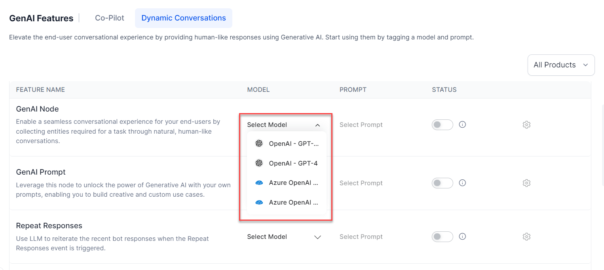
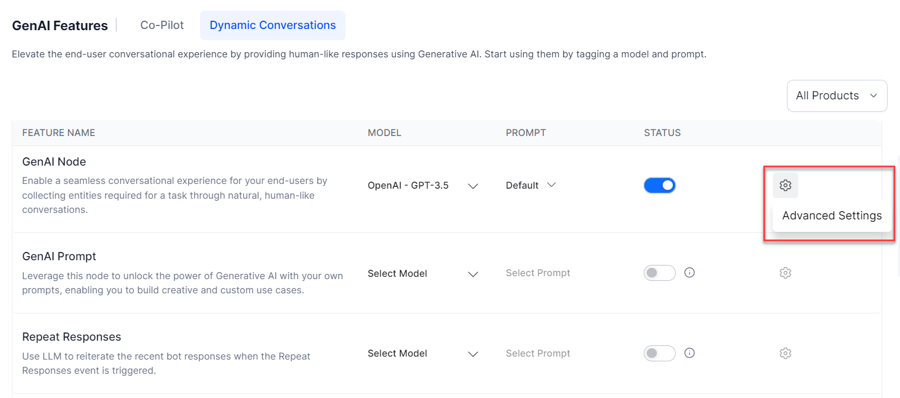
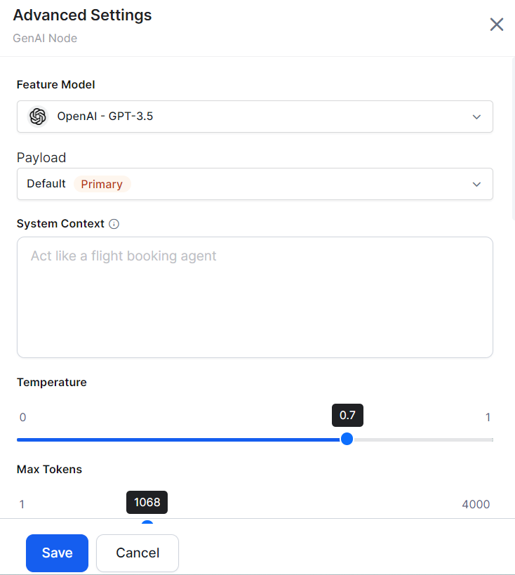
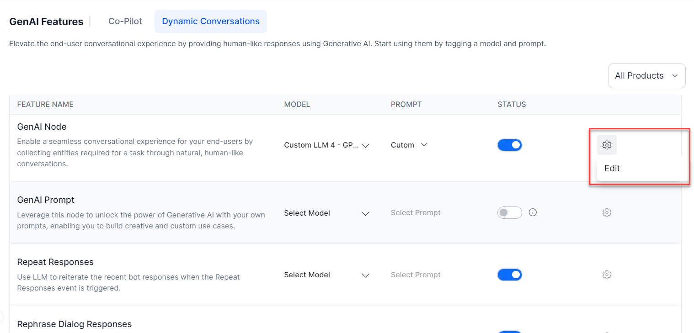
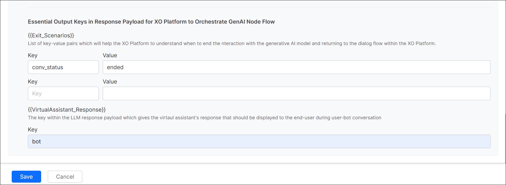
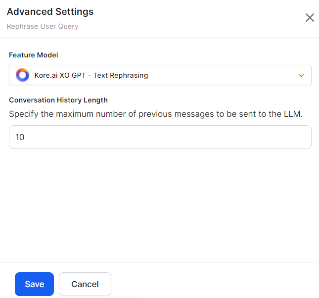

Dynamic Conversations Features¶
The Dynamic Conversations features boost your virtual assistants performance with LLM-powered runtime features designed to streamline development and reduce time and effort. By default, all the features are disabled. To enable the feature, select the model, prompt, and toggle the status to enable it. You can select another supported model for a feature if you have configured multiple models. You can also change the model, its prompts, and its settings.
Steps to enable the feature:
-
Navigate to Generative AI Tools > GenAI Features > Dynamic Conversations. 
-
Select the Model and Prompt from the drop-down list for a feature.
- Turn on the Status toggle. The success message is displayed.
.png){kind=link}
Product Filter¶
Smart filtering in the features section is based on the context from which the users access the Generative AI menu. This will only show the relevant feature options for that product (e.g., Automation, Search, Agent). The users can easily add/remove this filter as needed.
{kind=link}
Change Settings for a Model¶
Choose the option below based on the model for which you want to change the settings:
Change Settings for a Pre-built Model¶
You can change the selected models settings if required. In most cases, the default settings work fine.
Follow these steps:
- Go to Generative AI Tools > GenAI Features > Dynamic Conversations.
-
Hover over the feature to view the Advance Settings (gear) icon. 
-
Click the Advance Settings. The Advance Settings dialog box is displayed. 
.png){kind=link}
.png){kind=link}
Adjusting the settings allows you to fine-tune the models behavior to meet your needs. The default settings work fine for most cases. You can tweak the settings and find the right balance for your use case. A few settings are common in the features, and a few are feature-specific:
- Model: The selected model for which the settings are displayed.
- Instructions or Context: Add feature/use case-specific instructions or context to guide the model.
- Temperature: The setting controls the randomness of the models output. A higher temperature, like 0.8 or above, can result in unexpected, creative, and less relevant responses. On the other hand, a lower temperature, like 0.5 or below, makes the output more focused and relevant.
- Max Tokens: It indicates the total number of tokens used in the API call to the model. It affects the cost and the time taken to receive a response. A token can be as short as one character or as long as one word, depending on the text.
- Number of Previous User Inputs: Indicates how many previous user messages should be sent to the model as context for rephrasing the response sent through the respective node. For example, 5 means that the previous 5 responses are sent as context.
- Additional Instructions: Add specific instructions on how prompts should be rephrased. You can create a persona, ask it to rephrase in a particular tone, etc.
- Similarity Threshold: The Similarity Threshold is applicable for the Answer from Docs feature. This threshold refers to the similarity between the user utterance and the document chunks. The platform shortlists all chunks that are above the threshold and sends these chunks to the LLMs to auto-generate the responses. Define a suitable threshold that works best for your use case. Setting a higher threshold limits the number of chunks and may not generate any result. Setting a lower threshold might qualify too many chunks and might dilute the response.
Change Settings for a Custom Model¶
For a custom model, you can only change the post-processor script to adjust the actual response with the expected response.
Follow these steps:
- Go to Generative AI Tools > GenAI Features > Dynamic Conversations.
-
Hover over the feature to view the Settings (gear) icon. 
-
Click Edit. The Actual Response is displayed.

-
Click Configure. The Post Processor Script is displayed.

-
Modify the script and click Save & Test. The Response is displayed.

-
Click Save.
- (Only for GenAI Node) Enter the Exit Scenario Key-Value and Virtual Assistance Response Key fields. Click Save. The Exit Scenario Key-Value fields help identify when to end the interaction with the GenAI model and return to the dialog flow. A Virtual Assistance Response Key is available in the response payload to display the VAs response to the user. 
{kind=link}
{kind=link}
Product and Feature Support Matrix¶
The following table displays the Dynamic Conversation features and the supported products.
( Supported | Not supported)
| Feature | Automation AI | Search AI | Agent AI |
|---|---|---|---|
| Agent Response Rephrasing | |||
| Answer Generation | |||
| GenAI Node | |||
| GenAI Prompt | |||
| Repeat Responses | |||
| Rephrase Dialog Responses | |||
| Rephrase User Query | |||
| Vector Generation | |||
| Zero-shot ML Model |
Model and Feature Support Matrix¶
The following table displays the Dynamic Conversation features and the supported models.
( Supported | Not supported)
| Model | Agent Response Rephrasing | Answer Generation | GenAI Node | GenAI Prompt | Repeat Responses | Rephrase Dialog Responses | Rephrase User Query | Vector Generation | Zero-shot ML Model |
| Azure OpenAI GPT 3.5 Turbo | |||||||||
| Azure OpenAI GPT 4 | * | ||||||||
| OpenAI GPT 3.5 Turbo | |||||||||
| OpenAI GPT 4 | * | ||||||||
| OpenAI GPT 4 Turbo | |||||||||
| OpenAI GPT 4o | |||||||||
| Anthropic Claude Instant | |||||||||
| Anthropic Claude | |||||||||
| Custom LLM | |||||||||
| Kore.ai XO GPT |
* Currently, the Zero-shot ML Model does not support batch testing when using GPT 4.
Note
Azure OpenAI and OpenAI have officially ended support for their GPT-3 model on January 4, 2024. We recommend selecting a higher or alternate model for supported features as soon as possible. Learn more.
Feature Details¶
Agent Response Rephrasing¶
Agents will be able to choose the LLM to rephrase their responses in the following tones.
- Formalize: Allows agents to elevate the formality of their writing, making it suitable for business or any other formal contexts.
- Friendly: Offers suggestions and improvements to promote a friendly and approachable tone in text.
- Expand: Allows agents to elevate the formality of their writing, making it suitable for business or any other formal contexts.
- Rephrase: Allows agents to elevate the formality of their writing, making it suitable for business or any other formal contexts.
Answer Generation¶
This feature helps generate an answer to the user question based on the data ingested into the Search AI application. The relevant data with a user query is inserted into the prompt, and the configured LLM responds with the answer. This answer is then formatted appropriately and presented to the user. Learn more.
GenAI Node¶
When enabled, this feature lets you add an GenAI Node to Dialog Tasks. This node allows you to collect Entities from end-users in a free-flowing conversation (in the selected English/Non-English Bot Language) using LLM and Generative AI in the background. You can define the entities to be collected as well as rules & scenarios in English and Non-English Bot languages. You can configure node properties just like any other node. You can also use the GenAI Node across Dialog Tasks.
{kind=link}
Usage
When creating or editing a Dialog Task thats created manually or auto-generated, you can find a node called GenAI Node within your nodes list.
When this feature is disabled, the node is unavailable within the Dialog Builder. Learn more.
GenAI Prompt¶
This feature lets you define custom user prompts based on the conversation context and the response from the LLMs. You can define the subsequent conversation flow by selecting a specific AI model, tweaking its settings, and previewing the response for the prompt.
Usage
-
When building the Dialog Flow, click the + button, and select the GenAI Prompt node.

-
Configuring the Component Properties in the following sections helps set up the node:
- General Settings: Provide Name and Display Name for the node and write your own OpenAI Prompt.
- Advanced Settings: Fine-tune the models behavior and tweak its settings as required for the following:
- Model
- System Context
- Temperature
- Max Tokens
- Advanced Controls: Select the maximum wait time (Timeout) to receive a response from the LLM and the bots response (Timeout Error Handling) when a timeout error occurs.
- When you add custom tags to the current message, user profile, and session under Instance Properties, you can build custom profiles for the bot conversation. .
- Configuring node connections on an instance lets you define the connection rules for the conversation using transition conditions. This lets the conversation follow specific paths based on the users input.
If this feature is disabled, you cannot configure the ML model to build custom prompts using OpenAI for different use cases. Learn more.
Repeat Responses¶
This feature uses LLM to reiterate the recent bot responses when the Repeat Response event is triggered. Bot developers can enable the event and customize the trigger conditions. This empowers end-users to ask the bot to repeat its recent responses at any point during the conversation. Currently, this event is supported for IVR, Audiocodes, and Twilio Voice channels. Learn more.
Rephrase Dialog Responses¶
This feature sends all User Prompts, Error Prompts, and Bot Responses to the Generative AI along with the conversation context, which depends on the configured number of user inputs. Responses are rephrased in English or the selected Non-English Bot Language based on the context and user emotion, providing a more empathetic, natural, and contextual conversation experience to the end-user. You can give instructions (additional instructions) in English or any other bot language you select.
.gif){kind=link}
Usage
When configuring a Message, Entity, or Confirmation node, you can enable the Rephrase Response feature (disabled by default). This lets you set the number of user inputs sent to OpenAI/Anthropic Claude-1 based on the selected model as context for rephrasing the response sent through the node. You can choose between 0 and 5, where 0 means that no previous input is considered, while 5 means that the previous. 5 responses are sent as context.
When this feature is disabled, the Rephrase Response section is not visible within your nodes Component Properties.

Rephrase User Query¶
This feature uses the Kore.ai XO GPT Model. This model helps improve intent detection and entity extraction by enriching the user query with relevant details from the ongoing user conversation.
When a user intent and entity are split across multiple utterances or through the conversation, the feature enriches the user query by rephrasing the users multiple queries during runtime. This enriched user query contains all the conversation details so the bot can understand the actual meaning behind a users utterance. This enriched user query is fed to the natural language, improving accuracy by improving intent identification and entity extraction.
Usage
The LLM rephrases the query using one of the following methods depending on the scenario:
Completeness: The user query should be complete based on the conversation context so that the NLP can identify the right intent. If the user query is incomplete, the system urges the user to rephrase with more information.
For example: User: What is the weather forecast for New York tomorrow? Bot: It will be Sunny, with temperature ranging between 30 35 degrees Celsius. User: How about Orlando? Bot: Sorry, I cannot understand. Can you please rephrase?
The query should be completed as How about the weather forecast in Orlando tomorrow?.
Co-referencing: Coreference arises when multiple expressions or queries within text pertain to a common entity. In cases where a users query demonstrates incomplete coreference, the system prompts the user to rephrase the query with additional information. This enhances NLPs ability to discern the correct intent and entities involved.
For example: User: Ive been experiencing a persistent headache for the past week. Bot: Im sorry to hear that. Have you been taking any medication for it? User: Yes, Ive been taking ibuprofen, but it doesnt seem to help much. Bot: I see. How often do you take ibuprofen? User: I take it every six hours Bot: I dont understand. Can you tell me how often you take ibuprofen?
The co-reference in the user query should be expanded for NLP to identify the right intent and entities. The co-reference should be expanded as I take ibuprofen every six hours.
Completeness and Co-referencing: The following example illustrates completeness and co-referencing issues with the users input which triggers rephrasing.
For example: User: I want to apply for a personal loan.
Bot: Sure, I can help you. Youre eligible to take a personal loan of up to 20,000$.
User: How about a Home loan? Bot: Youre eligible to apply for a home loan as well. You can avail up to 100,000$. User: What about the interest rates of both loans?
The co-reference and the query have to be completed as What is the interest rate of personal loan and home loan?
Conversation History Length¶
This setting allows you to specify the number of recent messages sent to the Kore.ai XO GPT model as context for the user query rephrasing feature. These messages include both user messages and virtual assistant (VA) messages. You can set any value greater than 1. However, the number of messages sent is limited to the session's conversation history, even if your set value is higher. The default value is 10. You can access the Conversation History Length from Repharse User Query > Advanced Settings. 
{kind=link}
Vector Generation¶
This feature helps create vector embeddings for all the ingested data in the Search AI application. When the user inputs a query, the query is converted into an embedding, and then a vector search is performed to get a list of relevant data from the ingested data. This relevant data is then sent to the answer generation feature.
Zero-shot ML Model¶
This feature uses a Azure OpenAI or OpenAI LLM models to help the ML Engine identify the relevant intents from user utterances based on semantic similarity. By identifying the logical intent during run time, this feature eliminates the need for training data. The Zero-shot ML model requires well-defined intents to work well. This training approach is well-suited for virtual assistants with relatively fewer intents and distinct use cases.
Note
The Zero-shot model is production-ready in English but experimental in other languages. We advise caution before using it in production for non-English languages.
Usage
Before performing utterance testing, the user selects the Zero-shot Model with OpenAI Network Type. During utterance testing, the user provides a more descriptive input with a subject, object, and nouns. Once the test runs, the system identifies the most logical intent as the definitive match by comparing the following:
- User utterance input
- Intent names
The identified intent is then displayed as the matched intent.
If this feature is disabled, the system wont identify and display the logical and matched intent during utterance testing. Learn more.
Few-shot ML Model¶
The Few-shot model uses Kore Ais hosted embeddings to train virtual assistants based on intent names and training utterances. The model identifies the intents based on semantic similarity between user and training utterances.
Note
The Few-shot model is production-ready in English but experimental in other languages. We advise caution before using it in production for non-English languages.
Usage
Before performing utterance testing, the user selects the Few-Shot Model (Kore.ai Hosted Embeddings) network type.
During utterance testing, the user provides a more descriptive intent name with a subject, object, and nouns, as well as the training utterances. Once the test runs, the system identifies the most logical intent as the definitive match based on the following:
- The default configuration settings
- User utterance input
- Intent names
If this feature is disabled, the system wont identify and display the logically matched intent during utterance testing. Learn more.